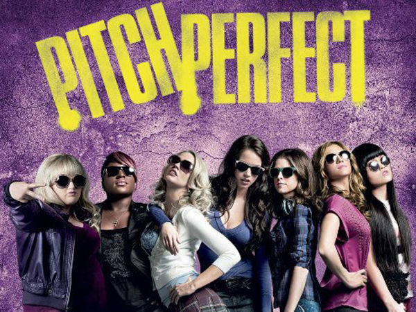

My Favorite Movies
Fast And The Furious 7

Fast and the Furious 7 is my favorite movie. It has a lot of action in it and it is on the edge thrilling. I love action movies. The cool parts are all the stunts especially the car jumping out of the airplane. I thought the movie was a great tribute to Paul Walker.
Deadpool

Deadpool is a very funny movie and it has cool action stunts. If you love funny movies than this movie is for you. He is a fun character and the action scenes are awesome. It makes it in slow motion so it looks a lot cooler.
Pitch Perfect
Pitch Perfect had me laughing till my sides hurt. I love comedy movies especially if Rebel Wilson is in it. All the characters were funny and the actors fit their roles perfectly.
The Fault In Our Stars
The Fault In Our Stars is a very moving story about a teenager named Hazel Grace Lancaster who was diagnosed with cancer and fell in love with Gus Waters who also had cancer. This movie makes you feel what love really is. I almost cried during this movie. It is a really good movie to see if you haven't.